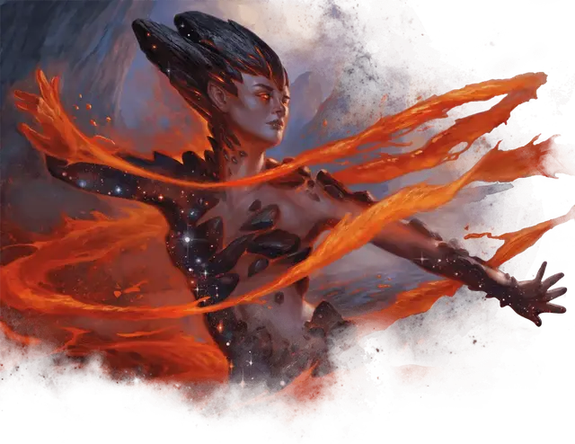

Ореада
Oread
Средняя Фея, хаотично-злая

Класс Доспеха 16 (природный доспех)
Хиты 49 (9к8 + 9)
Скорость 30 футов
| мод | спас | ||
|---|---|---|---|
| СИЛ | 14 | +2 | +2 |
| ЛОВ | 14 | +2 | +2 |
| ТЕЛ | 12 | +1 | +1 |
| мод | спас | ||
|---|---|---|---|
| ИНТ | 11 | +0 | +0 |
| МДР | 13 | +1 | +1 |
| ХАР | 18 | +4 | +4 |
Навыки Акробатика +4, Атлетика +4, Выступление +6
Иммунитет к урону огонь, яд
Иммунитет к состояниям испуг, отравление, очарование
Чувства пассивное Восприятие 11
Языки Общий, Сильван
Опасность 4 (1100 опыта)
Бонус мастерства +2
Особенности
Невидимая в огне. Ореада невидима, пока полностью окутана огнём.
Врожденное колдовство. Базовой характеристикой ореады является Харизма (Сл спасброска от заклинания 14, +6 к попаданию атакой заклинанием). Она может накладывать следующие заклинания, не нуждаясь в материальных компонентах:
• Неограниченно: огненный снаряд [fire bolt] (см. «Действия» ниже);
• 3/день: огненные ладони [burning hands];
• 1/день каждое: адское возмездие [hellish rebuke] (см. «Реакция» ниже), палящий луч [scorching ray].
Сопротивление магии. Ореада совершает с преимуществом спасброски от заклинаний и прочих магических эффектов.
Действия
Мультиатака. Ореда дважды атакует своим Огненным прикосновением или Огненным снарядом.
Огненное прикосновение. Рукопашная атака заклинанием: +6 к попаданию, досягаемость 5 футов., одна цель. Попадание: 9 (1к10 + 4) урона огнём.
Огненный снаряд (Заговор). Дальнобойная атака заклинанием: +6 к попаданию, досягаемость 120 футов., одно существо. Попадание: 5 (1к10) урона огнём.
Реакции
Адское возмездие (заклинание 2-го уровня; 1/день). Когда ореада получает урон от существа в 60 фт от себя и которого ореада, видит, существо, нанесшее урон ореаде, должно совершить спасбросок Ловкости Сл 14, получив 16 (3к10) урона огнём при провале или вдвое меньше урона при успехе.
Описание
Агрессивные ореады входят в число самых опасных нимф, поскольку они воплощают дикую мощь пламени, вулканизма и скрытых сил земли. Эти существа обычно обитают в отдаленных горных утесах и вблизи вулканов, где они сражаются с силами разрушения и возрождения. Во время лавин и извержений вулканов группы ореад могут мчаться впереди разрушений, танцуя, поя и делая все возможное, чтобы максимизировать надвигающиеся разрушения.
Благородные среди фей. Возвращаясь к какому-то многовековому конфликту, ореады отказываются сознательно уничтожать любую землю, населенную другой нимфой. Хотя они не будут работать, чтобы изменить естественный ход разрушения, они также не сделают дом другой нимфы частью какого-либо бедствия, которое они поощряют. В результате часть того, что делает поле альсеида или рощу дриад такими благословенными, заключается в том, что ореады изо всех сил стараются оставить такие места в покое.
Рассказы об Огне. Последователи Пирфора относятся к ореадам с особым почтением, поскольку мифы рассказывают о хитрых кузнецах, подружившихся с этими нимфами и убедивших их помочь в создании феноменальных произведений. В некоторых сказках кузнец находит ореада и позволяет ему наслаждаться уничтожением нового или замечательного предмета. В награду ореад предоставляет кузнецу материалы, извлеченные из пылающего сердца мира, позволяя кузнецу создавать еще большее чудо. Однако в других историях кузнец преследует ореада, а позже товарищи смертного находят знакомые инструменты и кучу пепла.
Нимфы
Божественные слуги, обитающие в нетронутых уголках мира, нимфы защищают места природной силы и наполняют свое окружение магией Нюкты. Некоторые из них доброжелательны и помогают тем, кто живет за счёт земли, в то время как другие воплощают жестокие аспекты природы. В любом случае, нимфы обычно избегают других разумных существ, предпочитая помнить о циклах природы, ежедневном взаимовлиянии диких животных или других космических силах. Иногда, однако, группы нимф одного и того же вида собираются в месте естественной силы или красоты. Во времена особой нужды божества, связанные с аспектами природы, могли использовать нимф в качестве посланников, хранителей или разведчиков.
Бессмертная природа. Нимфе не нужны еда, питьё или сон.